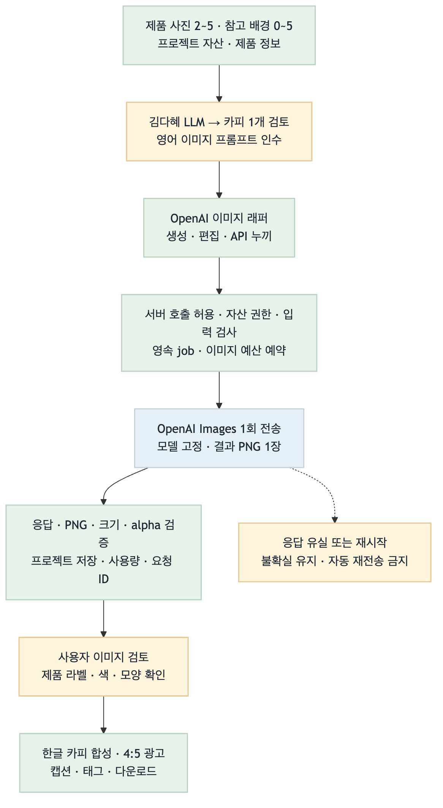
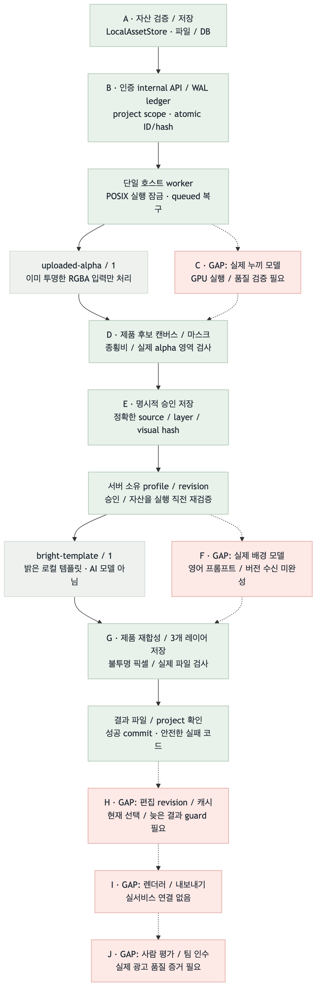

Target Flow
의도한 최종 흐름 · 완료 표시 아님

GAP / PARTIAL자산·영속 작업에 명시적 승인·고정 프로필·로컬 템플릿 실행을 연결했습니다. 실제 AI 모델·편집 revision·렌더러·사람 품질 인수는 남아 있습니다.
날짜는 마일스톤입니다. 완료 가능한 작업은 앞당기고, 미검증 항목은 근거와 함께 남깁니다.
의도한 최종 흐름 · 완료 표시 아님

실선: 현재 로컬 연결 · 점선: 미연결 · 회색: 실제 AI 모델 아님

초록색은 로컬 검증 범위입니다. 승인 기록은 호스트의 확인 전달이며 사람 신원·최종 광고 품질을 인증하지 않습니다.
| 노드 / 연결 | 상태 | 확인한 차이 | 다음 근거 / 작업 |
|---|---|---|---|
| A | MATCHED (모듈) | 파일 decode/정규화/hash/프로젝트 경계와 저장 구현. 최종 사용자 로그인은 별도. | assets.py / 자산 테스트 |
| A → B / B | MATCHED (로컬 서버) | Bearer→project 매핑, atomic PUT, 동일 ID/hash 재사용, WAL ledger와 조회 API. | inference_api.py / job_ledger.py |
| B → worker | MATCHED (로컬 실행 기반) | POSIX 잠금, DB queued 검색, owner 검증, 실제 파일 확인 후 success. 단일 호스트 범위. | worker·loopback·프로세스 복구 테스트 |
| worker → C / C | GAP | 실제 누끼 모델과 GPU 품질 검증은 없음. uploaded-alpha/1은 이미 투명한 RGBA만 받으며 불투명 사진을 누끼 성공으로 처리하지 않음. | 모델 선택·접근·고정 환경·평가 조건 필요 |
| C → D / D | PARTIAL / MATCHED (로컬 입력) | 실모델 연결은 GAP. 기존 RGBA의 종횡비 유지 배치·캔버스·마스크 준비와 저장은 동작. | prepare_product_canvas / prepare API |
| D → E / E | MATCHED (저장·검증 범위) | 처음에는 미승인. literal true와 candidate hash를 확인하고 project/실파일/마스크/영역을 검증. 사람 신원·품질 승인은 보증하지 않음. | ProductApprovalStore / 승인 API |
| E → profile → template → G | MATCHED (로컬 템플릿 경로) | 고정 ID/revision/style/layout/크기만 허용. 승인·자산을 실행 직전 확인하고 3개 레이어를 저장. 실제 AI 모델 대체 증거는 아님. | LocalTemplateProcessor / runtime / CLI |
| E → F / F | GAP | 실제 배경 모델과 영어 프롬프트/버전 전달·tokenizer 검증 미연결. 프롬프트 생성은 텍스트 담당 범위. | B4 수신 DTO/hash와 실제 모델 adapter 분리 |
| F → G / G | PARTIAL / MATCHED (로컬 경로) | 로컬 template부터 승인 RGBA 재합성·불투명 픽셀·파일 검증까지 연결. 실모델 결과와 광고 품질은 미검증. | 3개 AssetRef / processor·runtime 테스트 |
| G → H / H | GAP | 승인 기록이 현재 프로젝트 선택을 뜻하지 않음. 편집 revision CAS·프로젝트 캐시·늦은 결과 차단 필요. | 다음 B4: 요청 버전 / 편집 상태 / 캐시 |
| H → I / I | GAP | 렌더러·내보내기 정책과 현재 문구 검수/이미지 품질/레이아웃 대조가 미연결. | 서비스·렌더러 공동 검증 |
| I → J / J | GAP | 사람 품질 평가·팀원 재현·최종 인수 미실행. | 권리 확보 평가셋과 팀 인수 증거 |
| 순서 | 작업 | 상태 | 연결 점수 | 선정 이유 | 다음 동작 |
|---|---|---|---|---|---|
| 1 | B4 · 프롬프트 버전 / revision / 캐시 | GAP | 3 + 2 + 2 + 2 − 1 = 8 | 입력 버전 누락·오래된 결과·프로젝트 교차 재사용을 차단 | 다음 릴레이 |
| 2 | 실제 누끼·배경 모델 검증 | GAP | 3 + 3 + 1 + 1 − 3 = 5 | GPU 인증·모델·사용 조건·평가셋이 필요 | 실행 조건 확보 후 |
| 3 | 렌더러·사람 품질 인수 | GAP | 1 + 1 + 1 + 1 − 2 = 2 | 다른 파트와 실제 출력/승인 확인 필요 | 서비스·평가셋 준비 후 |
| 완료 | B3 · 승인 / profile / 로컬 실행 | MATCHED (범위 한정) | 선정 대상 제외 | 명시적 승인과 template 결과를 실제 파일로 연결 | 148 tests + TCP CLI smoke PASS |
| 완료 | B2 · 영속 작업 API / worker | MATCHED (범위 한정) | 선정 대상 제외 | 파일/DB/HTTP/프로세스 복구 검증 | 기존 B2 증거 유지 |
| 완료 | B1 · 자산 / 캔버스 모듈 | MATCHED (범위 한정) | 선정 대상 제외 | 72 tests 및 CLI smoke 통과한 이전 배치 | 기존 B1 증거 유지 |
수신 입력의 hash와 현재 편집 상태를 연결합니다. 문구만 수정할 때 이미지를 재사용하고, 늦은 결과가 최신 선택을 덮어쓰지 못하도록 합니다.
상위 노드 영향(0–4) + 연결 가치(0–3) + 안전성(0–2) + 검증 가능성(0–2) + 위험 감점(0∼−3).
동점은 상위 노드, 더 작은 검증 가능한 변경 순입니다. 외부 실행 조건이 없으면 점수만으로 완료하지 않습니다.
B1: 72 tests PASS · B2: 112 tests PASS. 기존 파일/DB/HTTP/프로세스 복구 근거 유지.
B3: 전체 148 tests PASS, 승인/processor/runtime 35 tests PASS. 실제 TCP CLI 준비·다운로드·명시적 승인·합성·조회·결과 다운로드와 512×512 PNG 확인. 검증 기록
고정 템플릿을 사용한 합성 fixture입니다. 실제 AI 모델 호출·GPU 품질·외부 배포·사람 인수: NOT_RUN.
리포트 렌더: PASS · PNG 2개 decode, 제목 7개·범례 5개·GAP 12행·우선순위 6행, 가로 넘침 없음